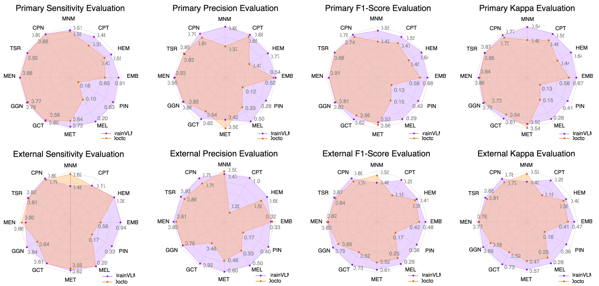
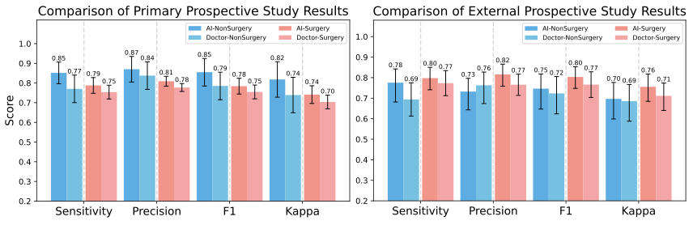
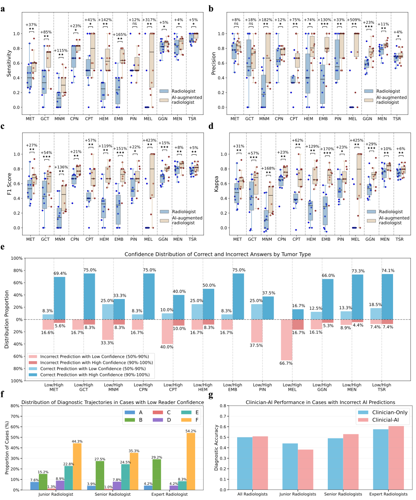

BrainVLM covers all 12 major WHO CNS5 categories, including less prevalent and imaging-ambiguous entities.

Accepted for publication in The Lancet Digital Health
01 · Input
BrainVLM reads complete or missing T1, T1c, T2, and FLAIR as one case, using raw or pre-processed MRI with available metadata.
View input details →
02 · Diagnosis
BrainVLM covers all 12 major WHO CNS5 categories, including less prevalent and imaging-ambiguous entities.
Validation includes 3,877 primary-test patients and 1,334 patients from 11 independent hospitals.

03 · Reports
Each case connects imaging findings, diagnostic impression, and diagnostic confidence for clinician review.
View reports & confidence →
04 · Clinical
Prospective and multi-reader studies test BrainVLM beyond retrospective benchmarks.

Prospective evaluation measures model performance before definitive diagnosis across surgical and non-operative pathways.

In a blinded study with 248 cases and 12 readers, AI assistance improved performance across experience levels.
05 · Data & Training



Background: Preoperative diagnosis of brain tumors from multimodal MRI is challenging because different tumor types can share imaging features and specialist interpretation is time-intensive. Methods: We developed BrainVLM, a vision-language foundation model trained with MRI, demographics, and radiology reports to classify all 12 major WHO CNS5 tumor types, quantify diagnostic uncertainty, and generate radiology-style reports. BrainTumor48K includes 47,947 individuals collected from 39 public repositories and 12 collaborating medical centers. The model was evaluated on 5,211 pathologically confirmed cases, a prospective real-world cohort, and a blinded multi-reader study with 12 neuroradiologists. Findings: BrainVLM achieved a primary-test macro-AUC of 0.85 and F1 score of 0.82, and an external-test macro-AUC of 0.80 and F1 score of 0.75. AI assistance improved neuroradiologists’ mean F1 by 23.3% and reduced diagnostic time by 36.1%. The model also achieved AUCs of 0.95 and 0.88 for adult-type diffuse glioma molecular subtyping in primary and external cohorts. Interpretation: By combining prediction, calibrated confidence, and report generation, BrainVLM is designed to support transparent and efficient clinician review rather than replace clinical judgment.
A specialized vision-language foundation model for preoperative brain tumor diagnosis, designed to pair accurate predictions with calibrated confidence and clinically readable reports.
BrainVLM combines complementary clinical signals and makes its output easier to review, communicate, and triage in real-world neuro-oncology workflows.
Processes standard T1, T1c, T2, and T2-FLAIR MRI together with patient demographics and available radiology text.
Targets the full spectrum of 12 major WHO CNS5 brain tumor categories, including low-prevalence and imaging-ambiguous tumors.
Provides calibrated uncertainty estimates and can surface a supplementary top-two diagnosis when the leading confidence is below 75%.
Generates a clinical narrative describing imaging findings, supporting interpretation beyond an isolated tumor label.
The paper evaluates BrainVLM on retrospective, multi-center external, prospective, and AI-augmented reader cohorts.
The molecular-subgroup AUCs correspond to primary and external validation cohorts, respectively.
BrainVLM is intended to support clinician review; lower-confidence cases should receive human assessment.
If you are unable to play the video, please try using a modern browser or contact the website administrator.